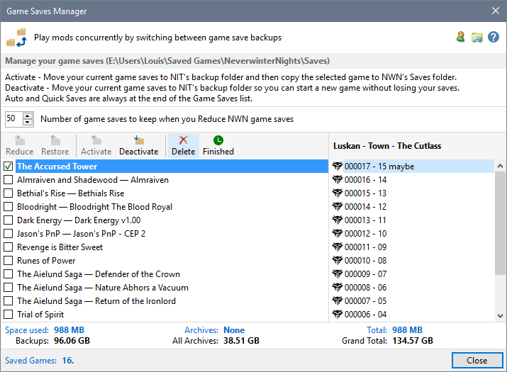
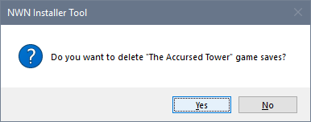
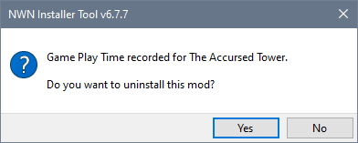
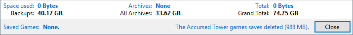
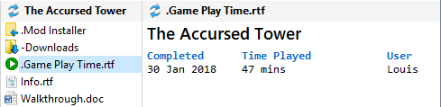

You should delete the Game Saves when you have completed playing a Mod so that the Installer Tool can record how long you spent playing the Mod.
Ensure the Profile containing the Mod you completed is Active before deleting the Game Saves, otherwise the Play Time file cannot be created or updated.
If the Mod you have completed does not have a Mod Installer, the Game Play Time file will not be created.
- To delete a specific game save, select the game in the save list and click Delete.
To delete all the game saves associated with a specific Mod, select one of the Mod's game saves in the save list and click Finished.

- Unless you have disabled Confirm Actions on the Preferences page in Advanced Settings, you need to confirm the delete operation.

- The selected Game is moved to the Recycle Bin or permanently deleted depending on your Recycle Bin for Game Saves Preferences setting.
- If there are more Game Saves associated with the Mod (eg automatic backups for multi-chapter Mods), repeat steps 1 and 2 until all the associated game saves have been deleted.
Note: If you clicked Finished, then you do not have to repeat steps 1 and 2.
- When the last Game Save associated with a Mod has been deleted or you clicked Finished, the Game Saves Manager lets you know that the Play Time has been recorded and asks whether you want to uninstall the mod.

- The information panel is updated to reflect the result of deleting the Game Saves.

- When you close the Game Saves Manager, the Play Time information is selected and displayed for the completed Mod.

Related Topics
Automatic backup of Game Saves
Display Character Summary Information
Open a game save folder with Windows File Explorer
Start a new game
Restore Game Saves from Backup
Switching Game Saves
Reduce the number of NWN Game Saves
Restore archived Game Saves
Delete archived Game Saves
Delete Game Saves
Restoring deleted saves from the Recycle Bin
Link Game Save to Mod name